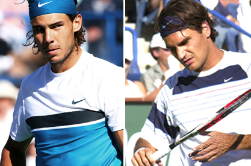
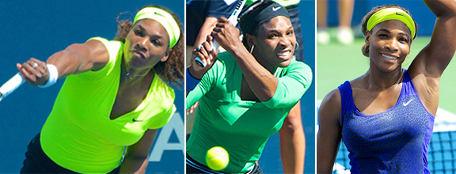

Previous: Should We Ban Players for Recreational Drugs? | 🏠 Mental Game Home | Next: Techniques for Developing Confidence
Statements
Comprehensive unified tennis knowledge base — Fundamentals, Stroke Analysis, Reference Library, and more
Statements
David Sammel

Nadal's ferocious commitment has often unsettled Federer.
The fact that we are human means that even the best competitors can be rocked by a true statement of intent. If this was a fallacy, there would never be upsets in sports.
There are many athletes arguably less talented than some of their peers yet are able to beat them. Rafael Nadal has a winning record against Roger Federer, who is arguably equal to or better than Nadal in many areas of the game.
It is Nadal's level of intention which caused Federer problems. Nadal plays with a ferocious commitment to win that unsettles most opponents.
Understanding the importance of statements is critical in developing the art of winning the mental game. Making a clear statement of intent delivers a message to your opponent.
The best players in the world understand the value of making an opponent feel uncomfortable. When you send a strong message it also builds your confidence.
Messages can be sent in many ways. Shot making is one. Hitting a a big shot for a winner. Hitting a big serve or an ace on a big point. Counterattacking off your opponent's best shot.
Other ways include, dictating the pace of the match between points and on the changeovers. Showing energy by jogging from your chair.
Counter attacking under bombardment changed the World War II air war between Germany and Britain.
In a closely fought match momentum will ebb and flow. A very powerful statement is the ability to absorb punishment with a clear mind.
When you are defending an onslaught you must find something to attack. Send the message that you can find a way to hurt your opponent even when you are on the defensive. This may cause him to press and make strategic errors.
Winston Churchill did not win World War Two with his decision to bomb Berlin early in the conflict. But it irritated Adolph Hitler and caused him to shift from bombing airfields to bombing British cities. This changed the game by giving British planes time to get into the air and defend the skies.
Recognizing that a statement has unnerved an opponent is the key to learning how to unlock opponents as people. In these moments you should work hardest to take the match from them or at least to shift momentum back in your favor.
Here is the cycle that leads to success in tough competition:
Make a statement and seize momentum.
Drive the advantage.
Recognize a good opponent will address this imbalance with his own statements.
Absorb any change in momentum.
Seize the initiative when the next opportunity arises.
This cycle is the essence of competition. It can occur countless times in a match and sometimes occurs within individual games or even points.
Most players can easily recall the last time they practiced their backhand or their serve. These same players would be quick to admit that the mental game is often what separates levels.

Serena's clear statement of intent "Hold, Kill, Smile."
But few can tell you when if ever they practiced it, for example, by visualizing the myriad of competitive situations they will inevitably face, and how to deal with them.
My experience coaching on tour has taught me that it makes a huge difference when a player goes on court knowing the exact statements they will make. Here for example is a statement of intent from Serena Williams: "Hold serve. Focus. Be confident. Move up. Attack. Kill. Smile."
David Sammel is a registered ATP tour coach and a consultant across the spectrum of professional sport. He has spent 25 years coaching international players, has been a national coach for the Lawn Tennis Association, and was named one of the world's top 50 coaches by Nike. He is the head coach of Team Bath-Monte Carlo Tennis Academy located at the University of Bath, Bath England. He is a regular contributor in British media and tennis commentary and an editor for Tennishead Magazine.
Click Here for More Information on the Academy
When you think about the most successful athletes and people of all time, almost every one of them has a certain aura and invincibility in the way they present themselves in sport and to the world. Sometimes mistaken for arrogance, this self-belief is essential in succeeding in professional sport and in life in general too.
The best believe they're the best and they make their opponents believe they're the best too. Locker Room Power: Building an Athlete's Mind, describes and examines David's coaching philosophy, which is drawn from his relentless drive to help people improve at their game, utilizing his vast experience, knowledge and understanding of the mental aptitude required to succeed as a professional sportsperson.
Click Here to Order!
Source: tennisplayer.net archive — Statements.docx (John Yandell teaching library, 2002-2022). Extracted and rendered as HTML for Tennis Future Lab.